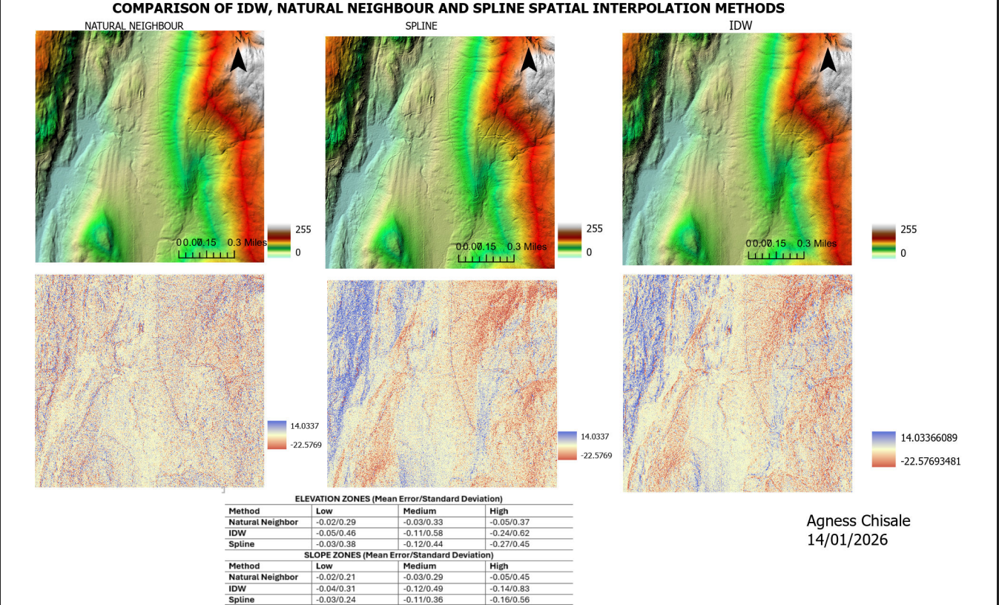
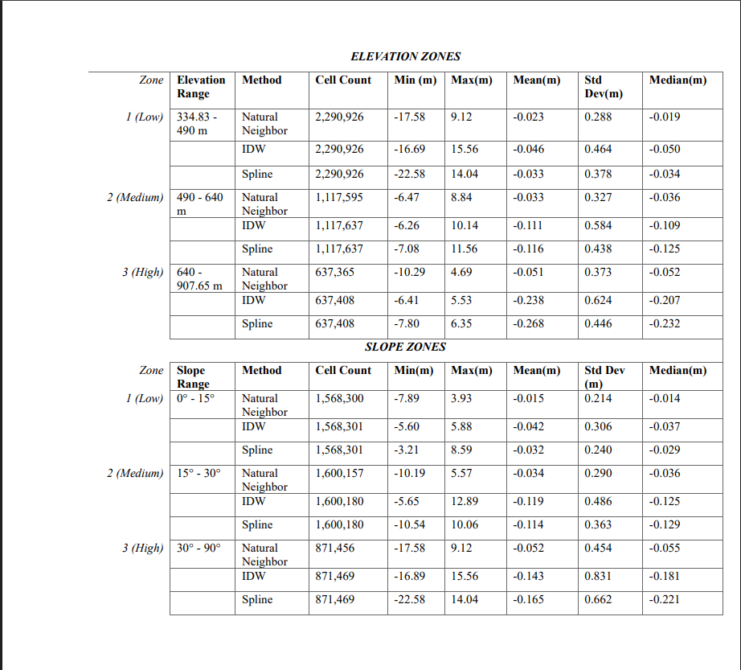

This project uses LiDAR data collected over the UBC Malcolm Knapp Research Forest (MKRF) in Maple Ridge, British Columbia, to generate and evaluate Digital Elevation Models (DEMs) using multiple spatial interpolation approaches. Ground return points were extracted, filtered, and processed using PDAL, and three interpolation methods — Natural Neighbor, Inverse Distance Weighting (IDW), and Spline — were compared against a binned reference DEM using zonal statistics across elevation and slope classes.
| Layer | Description | Source |
|---|---|---|
UBC_MKRF_LiDAR_2016 (16 tiles) | LiDAR point cloud tiles over MKRF, collected 2016 | MGEM Data Store |
tile_index.geojson | Spatial tile index for the LiDAR collection | MGEM Data Store |
| Tool | Purpose |
|---|---|
| PDAL | Point cloud filtering, cropping, merging, and thinning |
| QGIS | Tile selection, point cloud visualization, and 3D mapping |
| ArcGIS Pro | DEM generation, interpolation, zonal statistics, and 3D scene visualization |
Sixteen LiDAR tiles covering the AOI were identified using a spatial tile index and downloaded from the MGEM Data Store. A PDAL pipeline was used to filter ground returns, crop to the AOI, and merge tiles into a single LAS file. A thinned point cloud was also created by sampling one point per 5 m radius sphere. In ArcGIS Pro, a reference DEM was generated using binning at 1 m resolution. Three interpolation methods (Natural Neighbor, IDW, Spline) were applied to the thinned point cloud and difference rasters were computed against the reference DEM. Zonal statistics were calculated across reclassified elevation and slope zones to quantitatively evaluate each method.

Panel map showing all three interpolated DEMs (shaded relief) and their difference rasters compared to the binned reference DEM

Zonal statistics showing mean error and standard deviation of difference rasters across elevation and slope zones for each interpolation method